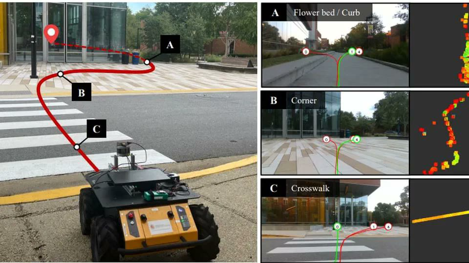
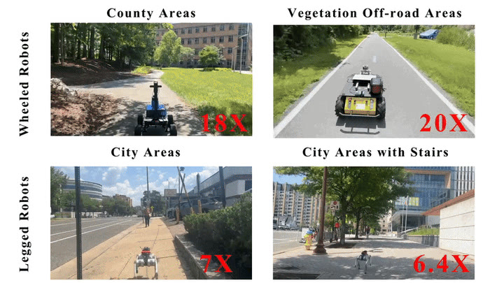
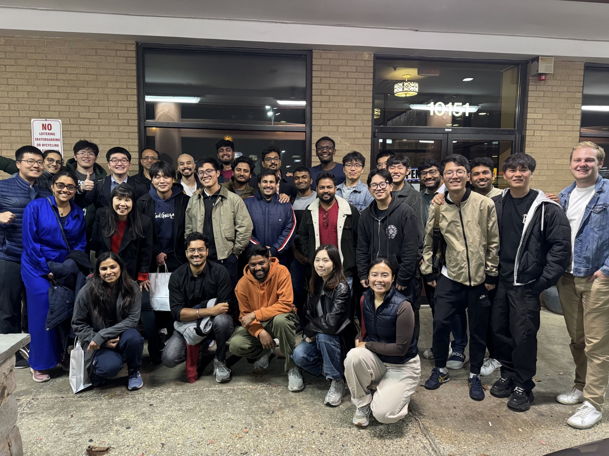
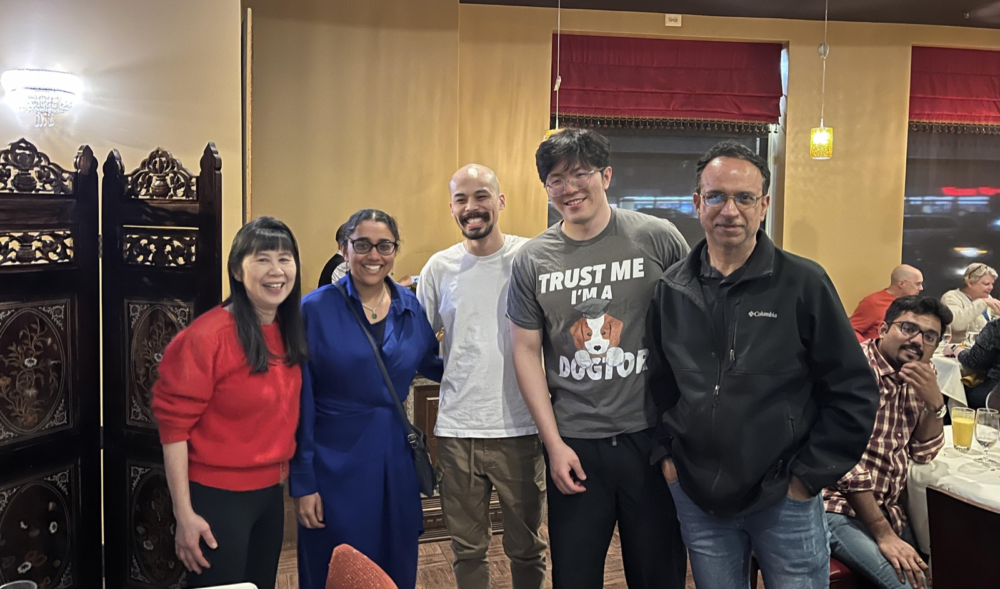
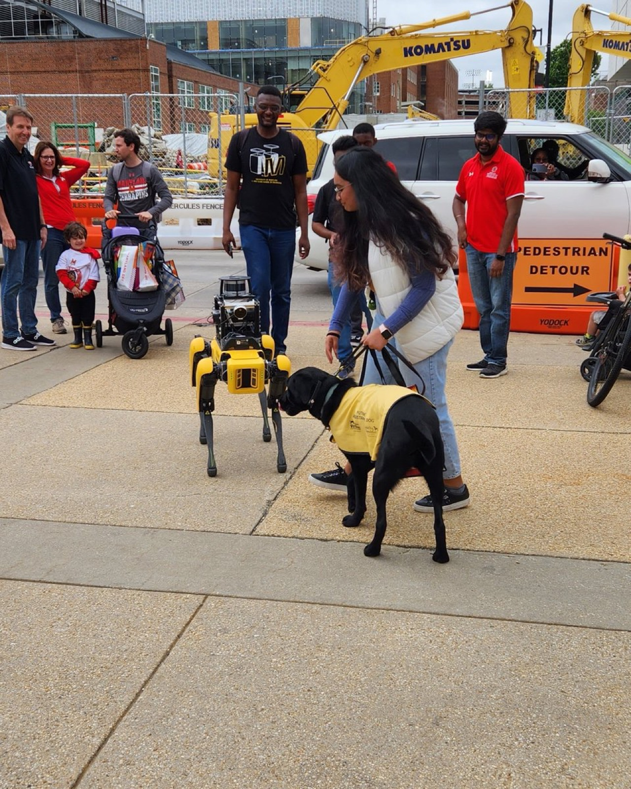
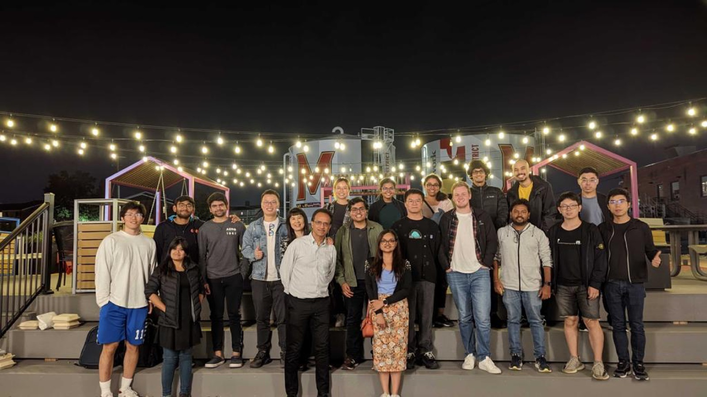
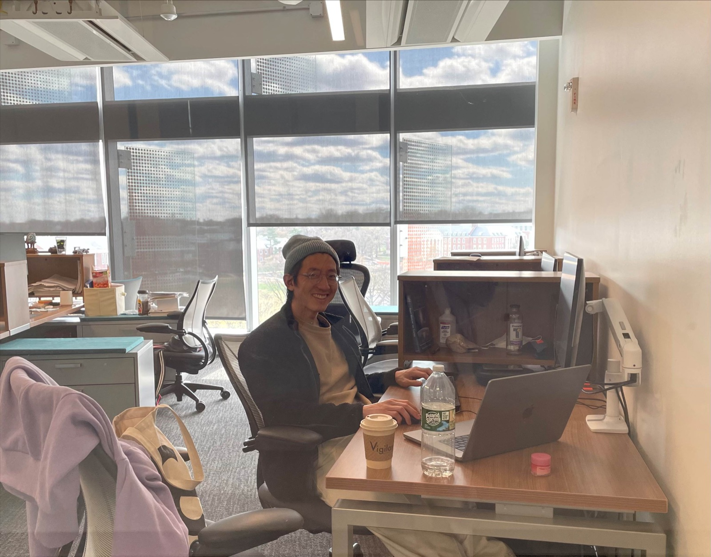
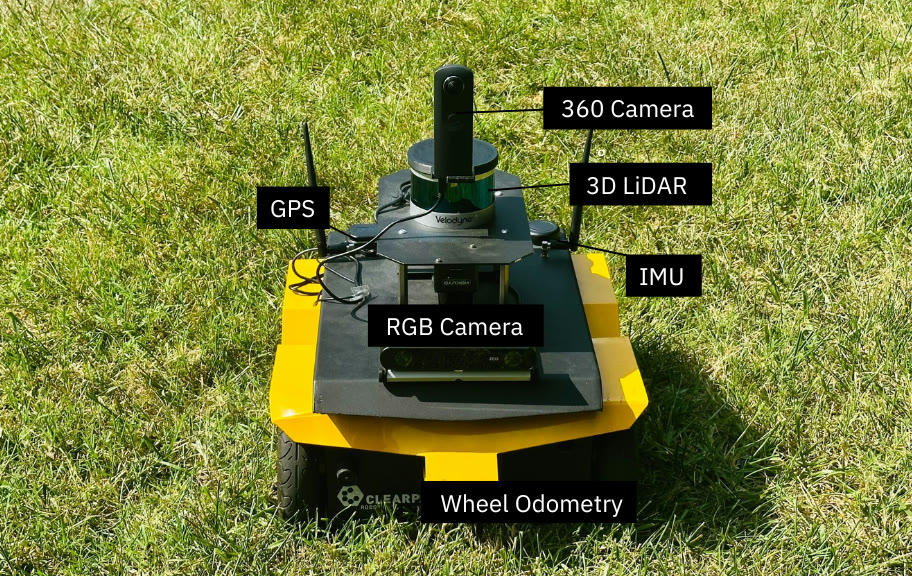
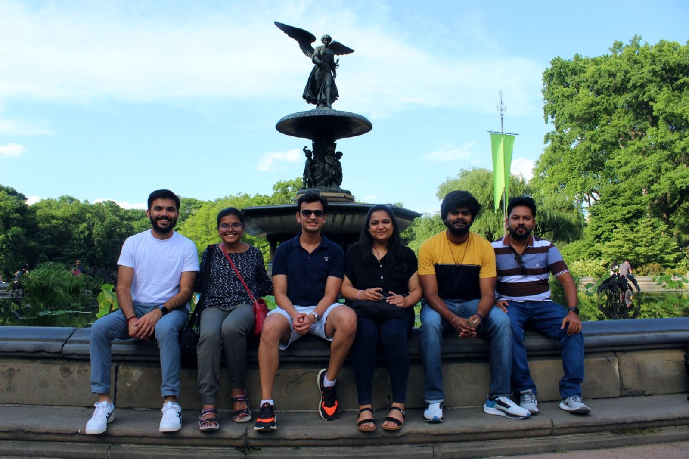

GAMMA Robotics @ UMD
We develop algorithms that enable intelligent systems to perceive, reason, and move through complex physical environments. Our research spans robot navigation, embodied reasoning, physics-based modeling and simulation, multi-agent systems, and human-centered autonomy.

















Research Areas
Explore our papers and project pages by theme.
Embodied AI & Robot LearningFoundation models, vision-language-action systems, locomotion, and adaptive learning
Robot Navigation & Field RoboticsRobust autonomy across indoor, outdoor, and unstructured environments
Multi-Agent Systems & Human-Centered AutonomyCrowds, social navigation, swarms, traffic, and autonomous driving
3D Perception & Aerial Intelligence3D reconstruction, neural rendering, scene understanding, and aerial video
Simulation, Graphics & Motion PlanningPhysics-based learning, geometric computing, animation, and planning
News
- Loading news…
Show all news
More coverage at gamma.umd.edu/media →